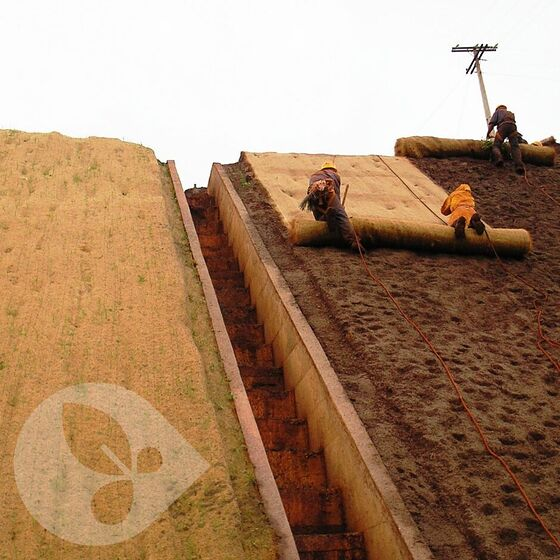
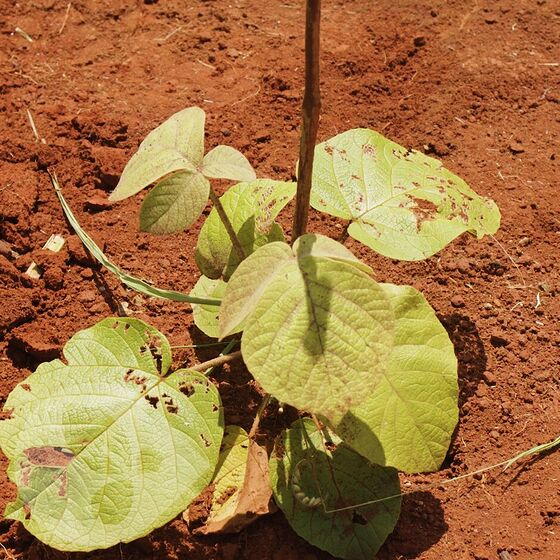
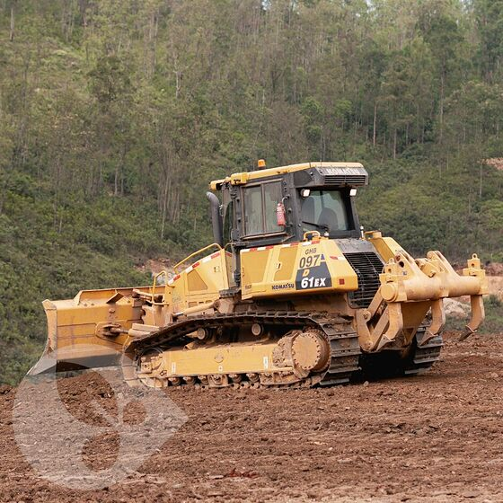

Notícias / Blog ESG & Técnico
Conhecimento aplicado em engenharia ambiental, conformidade e sustentabilidade.

Plantio compensatório e metas ESG: o que o investidor quer ver
Ler artigo →
Supressão vegetal mecanizada: produtividade com segurança
Ler artigo →
GHB renova certificações ISO 9001, 14001 e 45001
Ler notícia →
Capim vetiver na estabilização de taludes ferroviários
Ler artigo →